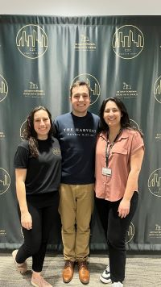
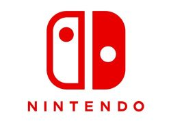

My name is Louis Lozneanu and I am a 2nd year student at IIT. My major is in Applied Analytics and I am getting my minor in Artificial Intelligence. I do not live too far away from school so I usually commute across the exrepssway in order to attend my classes each semester. I have 2 older sisters, one of which is working and the other is wrapping up her Master's Degree. I love to spend time with the both of them!
My belief and faith in Jesus Christ as the One true God and the only way into Heaven is what matters most to me and my indentity. I believe that the Bible is the Word of God. I am a member of Bethany Romanian Pentecostal Church and I serve there in many ways, including their brass band and orchestra (more about this in the music tab).
Some of my hobbies include playing music, but that is talked about more in my "Music" tab. I also enjoy many video games, especially Nintendo games. I've grown up playing certain franchises like The Legend of Zelda and Fire Emblem.
I've also recently gotten back into reading books. One book that I've been reading a lot recently is Mere Christianity by C.S. Lewis. In this book, Lewis goes over and explains the Christian faith in a very simple and logical way. Another really cool thing about this book is that it was originally done as a talk show during World War II and was later written down as a book.
More info about Mere Christianity